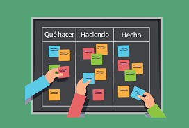

Las herramientas colaborativas son programas para trabajar en equipo que incluyen funciones para gestionar proyectos y tienen como objetivo mejorar el proceso de trabajo. Para ello, contienen funciones específicas para planificar, organizar y analizar tareas. El mejor groupware suele incluir estas prestaciones:
Mapas conceptuales: Muchas de estas herramientas están pensadas para asistir a los equipos en el proceso creativo con la elaboración de mind maps y otras variantes de brainstorming, animando a los implicados en un determinado proyecto a compartir sus ideas y participar, así, activamente en su concepción.
Compartir archivos: Uno de los pilares en los que se basa una herramienta de colaboración es la posibilidad de compartir tablas, documentos y otros archivos con el resto de los miembros del equipo, estos archivps están disponibles en cualquier momento y desde cualquier lugar.
Comunicación en tiempo real: Muchas herramientas colaborativas contienen funciones que permiten la comunicación en directo.
Calendario compartido: Se trate de una reunión, de una llamada importante o de una fecha de entrega, los correos, las llamadas o los mensajes de chat son un medio útil para informar de eventos próximos, aunque de esta manera también se olvidan fácilmente.
Funciones de gestión: Un buen software colaborativo también permite al administrador del proyecto o al jefe del equipo planificar los diferentes procesos de trabajo de la mejor forma posible sin perder la visión de conjunto. Por este motivo, también contiene componentes que permiten repartir y organizar los recursos de forma eficiente. Muchas de las herramientas ofrecen, asimismo, soluciones para poder documentar y valorar los avances en el proyecto.
Es un servicio que permite almacenar repositorios Git en la nube.

Git es un sistema de control de versiones libre y de código abierto diseñado para gestionar todo tipo de proyectos, desde pequeños hasta muy grandes, con rapidez y eficiencia.

GitLab es el producto integrado líder para el desarrollo moderno de software.

Intellij es un entorno de desarrollo integrado. Un IDE (por sus siglas en inglés) integra todas las herramientas que necesitas para desarrollar una plataforma, de modo que éste cuenta con un editor de código, un compilador, un depurador, etc..

Stack Overflow es la comunidad online de programadores más grande del mundo. Cada mes, la visitan más de 50 millones de desarrolladores. Este es el lugar donde aprenden, comparten conocimientos e impulsan su carrera.

Es una plataforma abierta para desarrolladores y administradores de sistemas para construir, enviar y utilizar aplicaciones distribuidas.

Una práctica que promueve la iteración continua de desarrollo y pruebas a lo largo del ciclo de vida de desarrollo de software del proyecto.
-Mejora de la calidad del producto: Fomentan el enfoque proactivo de los miembros del equipo en la búsqueda de la excelencia del producto.
-Mayor sarisfacción del cliente: El cliente está más satisfecho al verse involucrado y comprometido a lo largo de todo el proceso de desarrollo.
-Mayor motivación de los trabajadores: Los equipos de trabajo autogestionados, facilitan el desarrollo de la capacidad creativa y de innovación entre sus miembros.
-Trabajo colaborativo: La división del trabajo por distintos equipos y roles junto al desarrollo de reuniones frecuentes, permite una mejor organización del trabajo.
-Uso de métricas más relevantes: Las métricas utilizadas para estimar parámetros como tiempo, coste, rendimiento, etc. son normalmente más reales en proyectos ágiles que en los tradicionales.
-Mayor control y capacidad de predicción: La oportunidad de revisar y adaptar el producto a lo largo del proceso ágil, permite a todos los miembros del proyecto ejercer un mayor control sobre su trabajo.
-Reducción de costes: La gestión ágil del proyecto elimina prácticamente la posibilidad de fracaso absoluto en el proyecto, porque los errores se van identificando a lo largo del desarrollo en lugar de esperar a que el producto esté acabado y toda la inversión realizada.
Se basa en una estructura de desarrollo incremental, esto es, cualquier ciclo de desarrollo del producto y/o servicio se desgrana en «pequeños proyectos» divididos en distintas etapas: análisis, desarrollo y testing.
En Scrum un proyecto se ejecuta en ciclos temporales cortos y de duración fija. Cada iteración tiene que proporcionar un resultado completo, un incremento de producto final que sea susceptible de ser entregado con el mínimo esfuerzo al cliente cuando lo solicite.
Proveniente de Japón, Kanban es un símbolo visual que se utiliza para desencadenar una acción. A menudo se representa en un tablero Kanban para reflejar los procesos de su flujo de trabajo.
-Visualizar las tareas a realizar.
-Establecer el límite de metas a las que podemos llegar.
-Realizar un seguimiento del tiempo.
-Utilizar tarjetas de colores para visualizar bien las tareas en la tabla.
-Aprovechar al máximo los plazos de ejecución.
El híbrido Scrumban permite que los equipos usen lo mejor de ambos enfoques para satisfacer sus necesidades particulares. En cierta forma, Scrumban está más alineado con Kanban que con Scrum, en el sentido de que es más fácil de ejecutar en varias aplicaciones, ya que es menos restrictivo que Scrum.
Metodología de desarrollo que pertenece a las conocidas como metodologías ágiles, cuyo objetivo es el desarrollo y gestión de proyectos con eficacia, flexibilidad y control.
Los valores proporcionan un propósito a los equipos. Actúan como una «estrella del norte» para guiar sus decisiones en un alto nivel. Sin embargo, los valores son abstractos y demasiado difusos para una orientación específica. Por ejemplo: decir que se valora la comunicación puede dar lugar a muchos resultados diferentes. Las prácticas son, en cierto modo, lo contrario de los valores. Son concretas y realistas, y definen lo que hay que hacer. Las prácticas ayudan a los equipos a responsabilizarse de los valores. Por ejemplo, la práctica de los espacios de trabajo informativos favorece una comunicación transparente y sencilla.